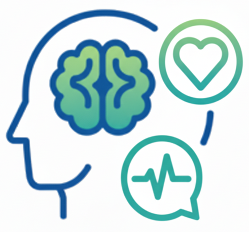
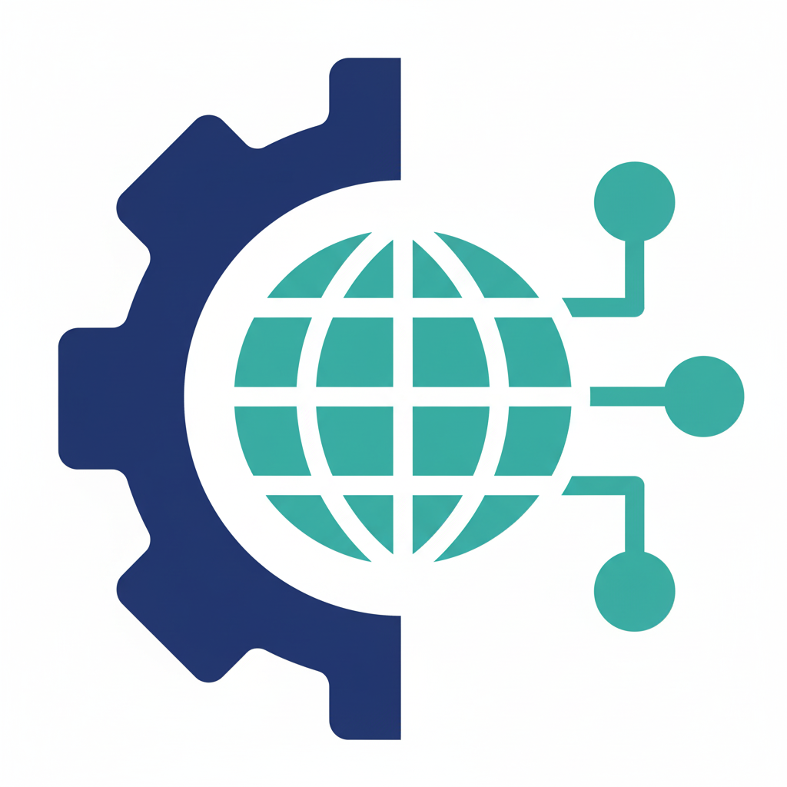
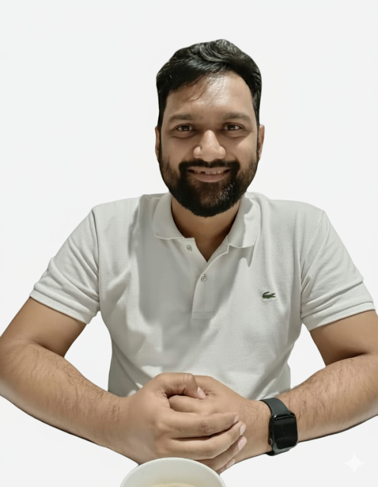
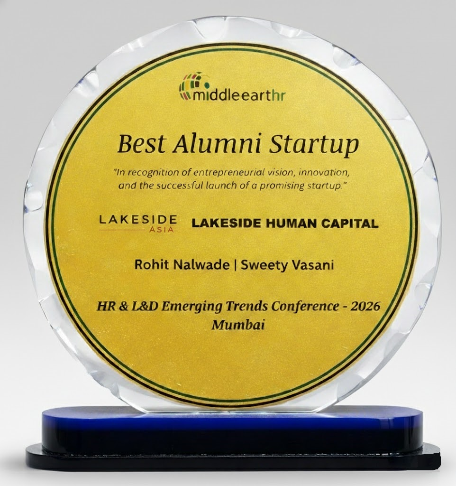

LAKESIDE HUMAN CAPITAL
LAKESIDE HUMAN CAPITAL
LAKESIDE HUMAN CAPITAL
LAKESIDE HUMAN CAPITAL
A Vertical of Lakeside Asia Holdings
At Lakeside Human Capital, we design strategic HR architecture powered by data, behavioral intelligence, and integrated workforce well-being — transforming HR into a measurable engine of growth for scaling organizations operating across India and the GCC.
Schedule a Strategic Consultation Get Your Free HR Health CheckAs organizations scale, challenges shift from operational tasks to systemic infrastructure demands. Growth no longer strains effort — it strains structure.
Is your foundation ready?
The Problem:
Rapid expansion often outpaces governance maturity. Evolving labor regulations across India and the GCC increase legal, financial, and reputational exposure when HR systems stay reactive.
The Lakeside Bridge:
We architect compliance-driven HR systems that embed governance, risk discipline, and structural readiness — enabling sustainable scale.
The Problem:
Scaling organizations struggle to compete for top-tier talent when hiring systems are fragmented and leadership pathways lack clarity, limiting succession depth and long-term capability.
The Lakeside Bridge:
We design integrated talent architecture that strengthens leadership pipelines, accelerates hiring velocity, and aligns workforce planning with strategic growth objectives.
The Problem:
Hidden organizational stressors — from cognitive overload to environmental factors — silently erode executive function, decision quality, and long-term sustainable performance capacity.
The Lakeside Bridge:
We strengthen organizational performance infrastructure through clinical resilience frameworks and optimized environments — protecting long-term cognitive capacity at scale.
You don’t need an enterprise-sized HR department to build world-class people systems. At Lakeside Human Capital, we combine strategic HR leadership, intelligent technology, and behavioral insight to help scaling organizations design structured, data-driven people operations.
Our approach goes beyond traditional fractional CHRO advisory. We integrate HR architecture with behavioral intelligence and workforce well-being frameworks — ensuring that people systems are not only efficient but resilient, aligned, and sustainable at scale.
We provide the clarity of a seasoned CHRO, the efficiency of a modern HR technology stack, and the resilience of a workforce designed for long-term performance — all in one seamless service.

A systems-engineered methodology designed to transform people operations into scalable infrastructure.
Engineered systems. Measurable outcomes. Sustained growth.
Structured operational and cultural audit identifying structural gaps and capability risks.
Architect scalable governance models, workflows, and enabling technologies.
Deploy structured policies and align leadership through disciplined execution.
Continuous analytics ensuring measurable P&L impact.
We provide modular services that scale with you. Whether you need to fix a specific problem or build an entire HR framework from the ground up, we have you covered.
Go from manual hiring to a data-driven talent pipeline with AI-powered sourcing and analytics.
Explore this service →Eliminate errors and overhead with streamlined payroll, onboarding, and policies for India & GCC.
Explore this service →Measure engagement and analyze feedback to create a culture that reduces attrition and boosts productivity.
Explore this service →Link employee performance directly to business outcomes with transparent, data-driven systems.
Explore this service →
Unlock potential through psychometric insights and well-being tools that drive engagement and productivity.
Explore this service →
Automate and integrate HR systems for seamless, compliant, and efficient workforce operations.
Explore this service →We engineer institutional performance — not isolated service functions.
Enterprise-grade people architecture aligned to governance, leadership, and long-term institutional scalability.
Evidence-based resilience embedded into leadership and performance strategy.
Work ecosystems designed to enhance clarity, engagement, and sustained output.
Human capital, wellbeing, leadership, and environment engineered as one unified framework.
Founder-led advisory with enterprise experience
Multi-market execution across regions
Systems impacting enterprise workforce scale
Enterprise-wide mental health transformation and leadership architecture, impacting over 10,000+ employees.
Crisis leadership frameworks and high-stress resilience architecture designed for frontline operations.
Digital HR transformation and cognitive infrastructure auditing driving operational excellence.
A unique partnership combining enterprise systems thinking, clinical psychology, and strategic HR leadership.
Together, they bring a rare blend of systems engineering and clinical science to the design of high-performance organizations.
Rohit bridges enterprise-grade systems engineering with clinical rigor. With over 20 years of experience in technology transformation and applied psychology, he designs scalable human capital frameworks that align operational performance with cognitive resilience and long-term institutional stability.
Sweety brings deep expertise in strategic HR leadership and behavioral diagnostics. A certified psychometric assessor and seasoned HR practitioner, she translates workforce data into actionable people strategies — ensuring employee wellbeing and organizational performance move in tandem.

Recognized as Best Alumni Startup 2026 at the HR & L&D Emerging Trends Conference (Mumbai), hosted by Middle Earth HR.
Awarded in recognition of entrepreneurial vision, innovation, and the successful launch of a high-impact Human Capital venture.

Start with a focused 30-minute HR Strategy Session. We assess your current people systems, identify structural gaps, and outline clear next steps — tailored to your stage of growth. No obligation. Just strategic clarity.